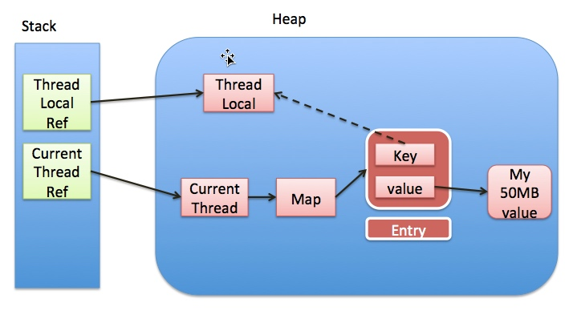

前言
ThreadLocal 的作用是提供线程内的局部变量，这种变量在线程的生命周期内起作用，减少同一个线程内多个函数或者组件之间一些公共变量的传递的复杂度。但是如果滥用 ThreadLocal，就可能会导致内存泄漏。下面，我们将围绕三个方面来分析 ThreadLocal 内存泄漏的问题
ThreadLocal实现原理ThreadLocal为什么会内存泄漏ThreadLocal最佳实践
ThreadLocal 实现原理

ThreadLocal的实现是这样的：每个Thread 维护一个 ThreadLocalMap 映射表，这个映射表的 key 是 ThreadLocal 实例本身，value 是真正需要存储的 Object。
也就是说 ThreadLocal 本身并不存储值，它只是作为一个 key 来让线程从 ThreadLocalMap 获取 value。值得注意的是图中的虚线，表示 ThreadLocalMap 是使用 ThreadLocal 的弱引用作为 Key 的，弱引用的对象在 GC 时会被回收。
ThreadLocal为什么会内存泄漏
ThreadLocalMap使用ThreadLocal的弱引用作为key，如果一个ThreadLocal没有外部强引用来引用它，那么系统 GC 的时候，这个ThreadLocal势必会被回收，这样一来，ThreadLocalMap中就会出现key为null的Entry，就没有办法访问这些key为null的Entry的value，如果当前线程再迟迟不结束的话，这些key为null的Entry的value就会一直存在一条强引用链：Thread Ref -> Thread -> ThreaLocalMap -> Entry -> value永远无法回收，造成内存泄漏。
其实，ThreadLocalMap的设计中已经考虑到这种情况，也加上了一些防护措施：在ThreadLocal的get(),set(),remove()的时候都会清除线程ThreadLocalMap里所有key为null的value。
但是这些被动的预防措施并不能保证不会内存泄漏：
- 使用
static的ThreadLocal，延长了ThreadLocal的生命周期，可能导致的内存泄漏（参考ThreadLocal 内存泄露的实例分析）。 - 分配使用了
ThreadLocal又不再调用get(),set(),remove()方法，那么就会导致内存泄漏。
为什么使用弱引用
从表面上看内存泄漏的根源在于使用了弱引用。网上的文章大多着重分析ThreadLocal使用了弱引用会导致内存泄漏，但是另一个问题也同样值得思考：为什么使用弱引用而不是强引用？
我们先来看看官方文档的说法：
To help deal with very large and long-lived usages, the hash table entries use WeakReferences for keys.
为了应对非常大和长时间的用途，哈希表使用弱引用的 key。
下面我们分两种情况讨论：
- key 使用强引用：引用的
ThreadLocal的对象被回收了，但是ThreadLocalMap还持有ThreadLocal的强引用，如果没有手动删除，ThreadLocal不会被回收，导致Entry内存泄漏。 - key 使用弱引用：引用的
ThreadLocal的对象被回收了，由于ThreadLocalMap持有ThreadLocal的弱引用，即使没有手动删除，ThreadLocal也会被回收。value在下一次ThreadLocalMap调用set,get，remove的时候会被清除。
比较两种情况，我们可以发现：由于ThreadLocalMap的生命周期跟Thread一样长，如果都没有手动删除对应key，都会导致内存泄漏，但是使用弱引用可以多一层保障：弱引用ThreadLocal不会内存泄漏，对应的value在下一次ThreadLocalMap调用set,get,remove的时候会被清除。
因此，ThreadLocal内存泄漏的根源是：由于ThreadLocalMap的生命周期跟Thread一样长，如果没有手动删除对应key就会导致内存泄漏，而不是因为弱引用。
ThreadLocal 最佳实践
综合上面的分析，我们可以理解ThreadLocal内存泄漏的前因后果，那么怎么避免内存泄漏呢？
- 每次使用完
ThreadLocal，都调用它的remove()方法，清除数据。
在使用线程池的情况下，没有及时清理ThreadLocal，不仅是内存泄漏的问题，更严重的是可能导致业务逻辑出现问题。所以，使用ThreadLocal就跟加锁完要解锁一样，用完就清理。